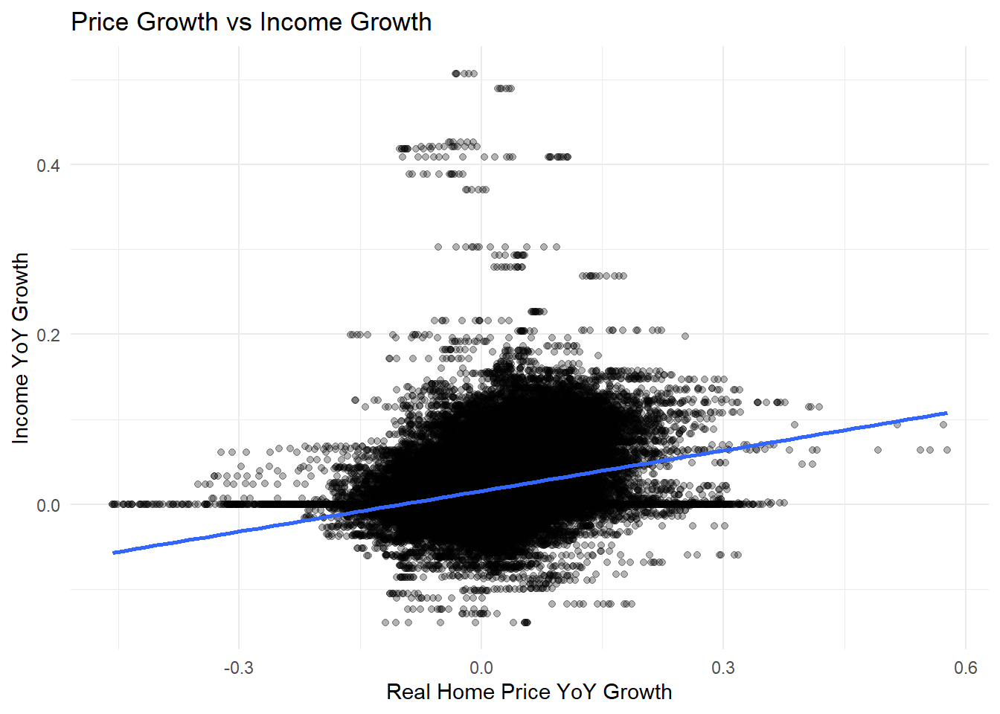

Housing Affordability in the United States: Prices, Income, and Interest Rates (2000–2025)
Introduction
Housing affordability has become a central economic and policy concern in the United States, particularly in the years following the COVID-19 pandemic. Rapid home price appreciation, historically low interest rates, and subsequent monetary tightening have reshaped household purchasing power across metropolitan housing markets (Federal Reserve Bank of St. Louis, 2024; Zillow Group, 2024). While rising prices are often cited as the primary driver of affordability stress, changes in financing conditions and income growth play equally important roles (Glaeser & Gyourko, 2018). Understanding these forces is essential for interpreting both the short-run dynamics and long-run structure of housing affordability.
This project analyzes housing affordability across U.S. metropolitan areas from 2000 to 2025 by integrating multiple public data sources into a unified metro-month panel. Zillow’s Home Value Index (ZHVI) provides a consistent measure of median home prices (Zillow Group, 2024), while mortgage rates and inflation are drawn from the Federal Reserve Economic Data (FRED) system (Federal Reserve Bank of St. Louis, 2024). Median household income is sourced from the American Community Survey (ACS) (U.S. Census Bureau, 2023) and expanded to monthly frequency using transparent annual constant imputation rules. Together, these data allow for a coherent examination of how prices, income, and interest rates jointly shape housing affordability over time.
The analysis is organized around three core questions. First, what drives short-run changes in housing affordability? In particular, how sensitive is affordability to changes in mortgage interest rates, which directly affect borrowing costs (Federal Reserve Bank of St. Louis, 2024)? Second, what explains long-run affordability trends across metropolitan areas? Specifically, to what extent does divergence between home prices and household income account for structural affordability erosion (Glaeser & Gyourko, 2018)? Third, are recent affordability declines localized to specific regions, or are they broadly shared across metropolitan housing markets nationally?
To address these questions, the project constructs a transparent affordability index that relates median household income to the estimated cost of financing a median-priced home. Exploratory data analysis is used to characterize national trends, regional heterogeneity, and distributional shifts in affordability (Case & Shiller, 1989). Regression models then quantify the elasticity of affordability with respect to mortgage rates, home prices, and income, and a counterfactual simulation evaluates how affordability would have evolved in the absence of recent interest-rate increases.
Load the housing_panel model
library(tidyverse)
── Attaching core tidyverse packages ──────────────────────── tidyverse 2.0.0 ──
✔ dplyr 1.1.4 ✔ readr 2.1.6
✔ forcats 1.0.1 ✔ stringr 1.6.0
✔ ggplot2 4.0.1 ✔ tibble 3.3.1
✔ lubridate 1.9.4 ✔ tidyr 1.3.2
✔ purrr 1.2.1
── Conflicts ────────────────────────────────────────── tidyverse_conflicts() ──
✖ dplyr::filter() masks stats::filter()
✖ dplyr::lag() masks stats::lag()
ℹ Use the conflicted package (<http://conflicted.r-lib.org/>) to force all conflicts to become errors
Zillow Home Value Index (ZHVI) values are reported in nominal dollars, meaning they reflect both changes in home prices and changes in the general price level over time. For housing affordability analysis, however, real prices—adjusted for inflation—are more informative because household income and purchasing power are affected by economy-wide inflation.
To convert nominal home prices into real terms, ZHVI values are deflated using the Consumer Price Index (CPI):
\[
\text{Real Home Price}_{r,t}
= \frac{\text{ZHVI}_{r,t}}{\text{CPI}_t} \times 100
\]
In the code above:
zhvi represents the nominal Zillow Home Value Index
cpi is the Consumer Price Index (indexed to a base year)
Multiplying by 100 re-scales the series so that real prices are expressed in constant-dollar terms relative to the CPI base period
Mortgage rates are typically reported as annual percentage rates (APR). However, mortgage payments are made monthly, and affordability depends on the monthly cost of servicing debt, not the annual rate itself. To align financing costs with monthly housing and income data, the annual 30-year fixed mortgage rate is converted to a monthly rate.
Formally, the monthly mortgage rate is defined as:
mortgage_30y is the annual 30-year fixed mortgage rate expressed in percentage points
Dividing by 12 converts the rate to a monthly basis
Dividing by 100 converts the percentage into a decimal rate
Role in the Affordability Measure
The monthly mortgage rate enters directly into the mortgage payment proxy, which approximates the recurring cost of financing a median-priced home. Because mortgage payments are highly sensitive to interest rates, even relatively small changes in the monthly rate can produce large changes in required payments and, by extension, housing affordability.
Using a monthly rate ensures that:
Financing costs are measured on the same temporal scale as prices and income
Short-run interest-rate shocks are accurately reflected in affordability dynamics
Subsequent regression coefficients have a clear economic interpretation as semi-elasticities
Interpretation
An increase in the monthly mortgage rate raises required monthly payments for a given home price, reducing housing affordability even if prices and income remain unchanged. This mechanism explains the rapid affordability declines observed during periods of monetary tightening.
To approximate the cost of servicing a mortgage on a median-priced home, this analysis constructs a simple mortgage payment proxy based on an interest-only formulation. The proxy is defined as the product of the real home price and the monthly mortgage interest rate:
zhvi_real represents the inflation-adjusted median home price
mortgage_rate_monthly is the monthly mortgage interest rate expressed in decimal form
This formulation approximates the interest component of a monthly mortgage payment while abstracting from principal amortization, loan term length, and down payment assumptions.
The purpose of this proxy is comparative, not contractual. Rather than replicating an exact mortgage payment schedule, the proxy is designed to capture how changes in home prices and interest rates jointly affect financing costs over time.
This approximation is appropriate because:
The interest-rate sensitivity of mortgage payments dominates short-run affordability changes
Amortization schedules and loan terms vary across borrowers but change slowly over time
Using a simplified proxy avoids imposing arbitrary assumptions about down payments or credit characteristics
As a result, the proxy preserves the direction and relative magnitude of affordability changes driven by prices and rates, which is the primary focus of the analysis.
Interpretation and limitations
Increases in real home prices or mortgage rates raise the proxy payment and reduce affordability
The proxy likely overstates payments relative to fully amortized mortgages at longer horizons
Results should be interpreted as relative affordability dynamics, not exact payment burdens
This simplified mortgage payment proxy enables transparent decomposition of affordability into price, income, and interest-rate components, supporting both exploratory analysis and regression-based elasticity estimation.
The core housing affordability index measures a household’s capacity to service housing costs relative to income. It is defined as the ratio of median household income to an estimated mortgage payment proxy for a median-priced home.
income_median_hh: Median household income for each metropolitan area
mortgage_payment_proxy: An estimated monthly mortgage payment based on prevailing home prices and interest rates
Higher values of the affordability index indicate greater housing affordability, as households have more income relative to required mortgage payments. Conversely, declines in the index reflect tighter affordability driven by rising home prices, higher interest rates, or slower income growth.
The affordability index follows standard housing economics practice by relating household income to the cost of financing housing, consistent with user-cost and affordability frameworks used in applied housing research(Glaeser & Gyourko, 2018; Poterba, 1984).
Interpretation and Properties
The index is scale-invariant: changes over time and differences across regions are meaningful even if absolute levels vary.
Because mortgage payments depend directly on interest rates, the index is highly sensitive to financing conditions, particularly in the short run.
In the long run, affordability depends on the relative growth of income and home prices, with persistent price growth outpacing income leading to structural affordability erosion.
This construction provides a transparent and economically intuitive measure of housing affordability that can be decomposed into price, income, and interest-rate components in subsequent analysis.
To measure changes in home prices and household income while minimizing seasonal effects, this analysis computes year-over-year (YoY) growth rates. For each metropolitan area, YoY growth compares the current value of a variable to its value in the same month one year earlier.
Formally, for a variable ( X_{r,t} ) observed in region ( r ) at month ( t ), the YoY growth rate is defined as:
In the code above, YoY growth is calculated separately for:
Real home prices (zhvi_yoy), using inflation-adjusted Zillow Home Value Index values
Median household income (income_yoy), using annual income estimates expanded to monthly frequency
By using a 12-month lag, YoY growth removes predictable seasonal fluctuations and provides a consistent measure of underlying trend growth. This is particularly important for housing markets, where prices and transactions exhibit strong seasonal patterns.
YoY growth rates allow for meaningful comparison between home price dynamics and income growth. In the context of housing affordability, persistent periods in which home prices grow faster than household income signal structural affordability erosion, even in the absence of short-run financing shocks.
The figure above shows the evolution of median housing affordability across U.S. metropolitan areas from 2000 to 2025. Two pronounced peaks are visible around 2012 and 2021, periods during which median affordability reached its highest levels. In both cases, elevated affordability reflects unusually favorable financing conditions rather than sustained improvements in underlying price–income fundamentals.
The post-2008 increase in affordability occurred in the aftermath of the subprime mortgage crisis. Following the collapse of high-risk mortgage lending, housing prices declined sharply while interest rates fell to historically low levels. Although credit conditions tightened substantially—particularly for lower-income and marginal borrowers—the combined effect of lower prices and aggressive monetary easing temporarily improved median affordability. This period illustrates how affordability can recover even amid weak credit availability when prices and financing costs fall sufficiently.
Importantly, this recovery was supported by extraordinary policy intervention, including Federal Reserve liquidity programs, bank recapitalizations through the Troubled Asset Relief Program (TARP), and regulatory reforms such as the Dodd–Frank Act. These measures stabilized the financial system and reduced borrowing costs, but they did not fundamentally alter long-run housing supply constraints or income growth trends.
The second peak around 2021 reflects a markedly different dynamic. Unlike the post-2008 period, housing prices were already elevated, but mortgage rates reached historic lows. Low borrowing costs temporarily masked underlying affordability pressures, allowing median affordability to reach its highest observed level despite rising prices. Once interest rates increased rapidly beginning in 2022, affordability declined sharply and immediately.
This contrast highlights a key distinction between the two episodes. The post-2008 affordability recovery was driven by falling prices and policy-supported rate reductions following a credit collapse, whereas the post-2021 affordability decline reflects direct financing cost shocks rather than the unwinding of excess credit expansion. In the latter case, affordability deteriorated despite relatively stable credit quality, underscoring the dominant role of interest rates in short-run affordability dynamics.
The tale of two distributions suggest that 2015 has a wider distribution of affordability indexing across the U.S. whereas stronger affordability indexing signal drivers pushed affordability to much narrower distributional ranges. This shows structural and not noise driven change. This also demonstrates widespread stress, not localized shocks.
While we can see smaller local and variable features between metros, overall our top metro listings share generally recognizable curve shape features. This includes a secondary spike signal just around 2011 and a primary spike signal at around 2020. It is worth noting that there may from metro to metro be a shared peak similarity between these two peaks while in other cases the secondary signal is diminished. Where the secondary signal is diminished may correspond to overall local economic conditions such as how these individual metros may have benefited from changes, for example, to mortgage rate pricing.
Correlation analysis indicates that housing affordability is most strongly associated with mortgage interest rates (r = −0.66), followed by real home prices (r = −0.52). Median household income exhibits almost no direct correlation with affordability (r = −0.05), suggesting that income growth has not kept pace with price and financing pressures. These results highlight the dominant role of monetary conditions in shaping affordability outcomes across U.S. metropolitan areas.
Growth Mismatch: Prices vs Income
housing_panel %>%filter(!is.na(zhvi_yoy), !is.na(income_yoy)) %>%ggplot(aes(zhvi_yoy, income_yoy)) +geom_point(alpha=.3) +geom_smooth(method="lm", se=FALSE) +labs(title ="Price Growth vs Income Growth",x ="Real Home Price YoY Growth",y ="Income YoY Growth" ) +theme_minimal()
`geom_smooth()` using formula = 'y ~ x'

Weak positive slope, huge dispersion with a fitted line slightly upward. The cloud is very wide. Income growth does not keep pace with price growth in any consistent way. Price growth regularly exceeds income growth. Many observations with price growth > 10-20% while income growth is more centrally distributed around 0-5%. This is a core structural and asymmetric problem. Housing pricing routinely experiences double-digit growth, while income growth is typically low single digits.
Housing affordability declined sharply after 2021 and showed slow growth thereafter. Indexed Affordability to Mortgage Rates show that affordability signals are sensitive to mortgage rate pricing. After 2020 we see a sharp decline in affordability with a sharp signal increase in mortgage rate pricing, given that affordability indexing shares similar characteristics to 2008 signals, we may be tempted to conclude rate shock implicates similarly over time. Short run changes in housing affordability are dominated by interest-rate shocks rather than contemporaneous price movements. In other words, overall house pricing changes the affect of affordability more gradually while sudden rate increases translate into immediate higher monthly costs.
Mortgage rates exert a large and highly statistically significant effect on housing affordability. Because the mortgage rate enters in levels while affordability is logged, the coefficient captures a semi-elasticity.
A one percentage point increase in the annual mortgage rate corresponds to a monthly increase of approximately: \[
0.01 / 12 \approx 0.00083
\]
The implied change in affordability is: \[
\Delta \log(\text{Affordability}) \approx -242 \times 0.00083 \approx -0.20
\]
Interpretation: A 1 percentage point increase in the annual mortgage rate is associated with roughly a 20% decline in housing affordability, holding prices and income constant.
This result highlights the dominant role of financing conditions in driving short-run affordability dynamics.
Real Home Prices (ZHVI)
Estimate: −1.007 p-value: < 0.001
Affordability exhibits approximately unit elasticity with respect to real home prices. A 1% increase in inflation-adjusted home values reduces affordability by roughly 1%.
Median Household Income
Estimate: +1.036 p-value: < 0.001
Affordability also exhibits near-unit elasticity with respect to income. A 1% increase in median household income raises affordability by approximately 1%.
Model Fit
R²: 0.994
Adjusted R²: 0.994
Residual standard error: 0.034
The model explains nearly all variation in log affordability across metro–month observations, reflecting the mechanical and accounting-driven relationship between prices, income, interest rates, and payment-based affordability measures.
Economic Interpretation
Taken together, these results imply:
Long-run affordability is governed by the relative growth of home prices and household income, consistent with standard housing economics.
Short-run affordability fluctuations, however, are overwhelmingly driven by mortgage interest rates, with even modest rate increases producing large declines in purchasing power.
This helps explain why affordability deteriorated so rapidly during post-2021 monetary tightening, even in markets where income growth remained strong.
Counterfactual analysis (highest ROI)
What if mortgage rates had not spiked?
Goal: We need to see how much of the post-2021 affordability collapse is attributable to mortgage rate increase holding prices and income fixed.
We see that observed affordability collapses after 2021 while the counterfactual line is much higher. The vertical gap is the rate-driven affordability loss.
# A tibble: 1 × 4
date affordability_obs affordability_cf pct_loss_due_to_rates
<date> <dbl> <dbl> <dbl>
1 2023-01-01 172. 332. 0.483
Affordability in early 2023 was ~48% lower than it would have been if mortgage rates had remained at 3%
Using the estimated semi-elasticity of affordability to mortgage rates, I simulate a counterfactual scenario in which mortgage rates remained at 3%. The results indicate that the majority of the post-2021 decline in housing affordability is attributable to rising interest rates rather than contemporaneous changes in prices or income.
Conclusion
This analysis examined the evolution of housing affordability across U.S. metropolitan areas from 2000 to 2025 by integrating Zillow home value data, FRED mortgage rates and inflation, and Census median household income. By constructing a unified metro_month panel and a transparent affordability index, the analysis distinguishes between short-run affordability shocks and long-run structural pressures.
Three core findings emerge. First, mortgage interest rates dominate short-run affordability dynamics. Descriptive evidence and regression results show sharp relationship patterns that translate into significant declines with mortgage rate increases. In contrast, a counterfactual simulation holding mortgage rates constant at 3% indicates that a substantial share of the post-2021 affordability collapse wouldn’t have occurred absent rapid monetary tightening.
Second, long-run affordability erosion is driven by consistent divergence between home prices and household incomes. Real home pricing and income both demonstrate approximately unit elasticity with respect to affordability. This implies that affordability is depends on the inter related growth rates. Over the given sample period, home price growth systematically outpaced income growth, creating latent affordability stress that was exposed when borrowing costs rose.
Third, after having examined various top metro localities, we can conclude that predominant affordability features are nationally expressed. This means that affordability is broad-based rather than localized. Distributional analysis over separate time periods also shows a pronounced leftward distribution shift across metros between 2015 and 2023 indicating rising costs affected most housing markets, not only traditionally high-cost regions.
This analysis is full descriptive as opposed to being fully causal. Affordability is mechanically constructed from prices, income, and interest rates, and the regressions should be interpreted as elasticities and decompositions rather than structural causal estimates. In addition, income measures rely on ACS data and imputation assumptions for temporal coverage (i.e., 2000-2009 and intermittent missing metro data). Note: imputation methods are simply last known value replacements and neither factor more complex income model dynamics.
Despite these limitations, the results highlight an important policy implication: interest rate shocks can rapidly and severely constrain housing affordability even when price levels change gradually. While long-run affordability ultimately depends on aligning income growth with housing supply and prices, short-run affordability crises are highly sensitive to financing conditions. Addressing housing affordability therefore requires both structural solutions to housing supply and income growth, and an awareness of how monetary policy interacts with household borrowing capacity.
Future study may find useful historical housing supply and demand versus new housing build construction with the attempt in better understanding housing inventory and the relationship of longer terms pricing pressure on markets.
References
Case, K. E., & Shiller, R. J. (1989). The efficiency of the market for single-family homes. American Economic Review, 79(1), 125–137.